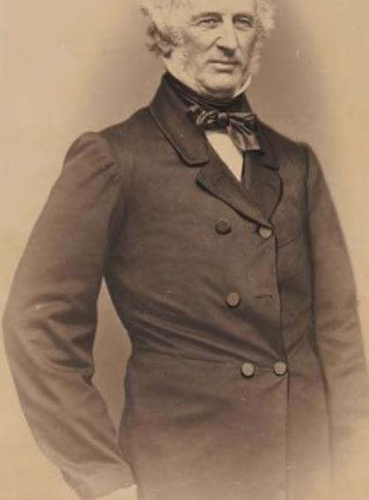

những câu trả lời dễ dàng mà không cần nhiều suy nghĩ. Vì vậy, việc xác định những đặc điểm mà chúng ta nên bắt chước hoặc tránh có thể rất khó khăn. Hãy để tôi kể cho bạn một câu chuyện khác về một người, giống như Bill 6ates, đã thành công rực rỡ, nhưng thành công của người đó khó có thểxác định được là do may mắn hay kỹ năng. (ornelius Vanderbilt vừa hoàn thành một loạt thương vụ để mở rộng đế chế đường sắt của mình. Một trong những cố vấn kinh doanh của ông đã nói với Vanderbilt mọi giao dịd màông đồng ý đều vi phạm pháp luật. “(Chúa ơi, John," Vanderbilt nói, “Bạn không cho là mình có thể chạy đường sắt theo quy chế của bang New York phải không?” Suy nghĩ đầu tiên của tôi khi đọc điều này là: “Thái độ đó là lý do tại sao ông ấy lại thành công như vậy”. Luật pháp không phù hợp với đường sắt vào thời Vanderbilt. Vì vậy, ông ấy nói “nó là thứ chết tiệt” và tiếp tục làm. Vanderbilt đã thành công rực rỡ. Vì vậy, thật hấp dẫn khi coi việc qua mặt luật pháp — khét tiếng và quan trọng với thành công của ông — là sự khôn ngoan. Người có tắm nhìn xa trông rộng đó không để bất cứ thứ gì cản đường! Nhưng phân tích đó nguy hiểm đến mức nào? Không một người lành mạnh nào lại giới thiệu tội ác trắng trợn như một đặc điểm của doanh nhân. Bạn có thể dễ dàng hình dung câu chuyện của Vanderbilt trở nên khác biệt nhiều một kẻ sống ngoài vòng pháp luật có công ty non trẻ bị sụp đổ theo lệnh của tòa án.
